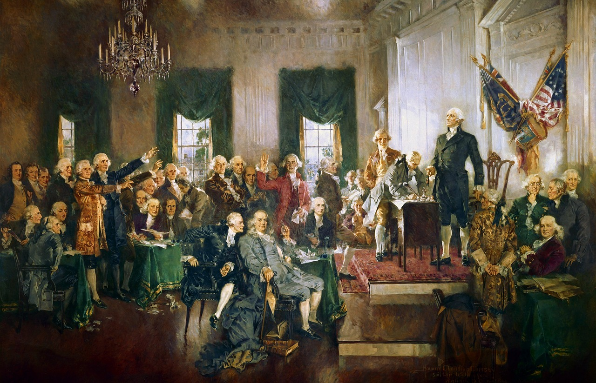
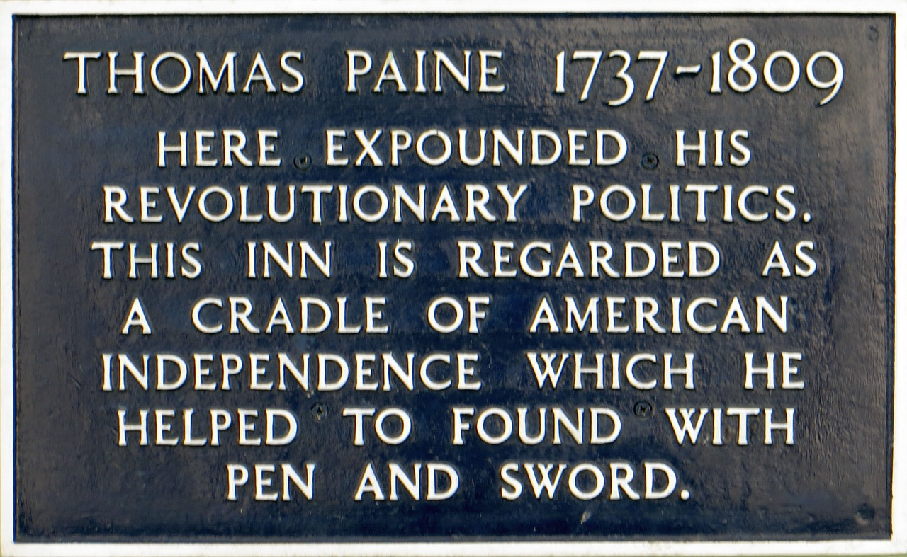

Course Description


This course traces the development of American society, politics, and economics from the American Revolution to Reconstruction after the Civil War. Students will use artwork, literature and other primary sources to analyze and reflect on the history of the United States. As a class we will infer the effects of history on events occuring today.
Link to Grades
Table of Important Events
| Month | Date | Event |
|---|---|---|
| August | 8/13/2019 | First Day of School |
| September | 9/2/2019 | No School Labor Day |
| October | 10/30/2019 | Parent/Teacher Conferences |